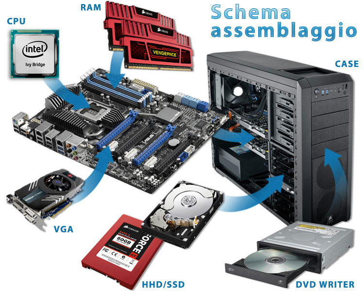

HOME
GUIDA
LISTINO PREZZI
PC DA GAMING
LAPTOP
RICONOSCIMENTI

Per montare un pc da gaming o un pc normale dobbiamo seguire dei passaggi che potrebbero semplificarci il lavoro. Ora andrò a spiegare come si monta un pc da gaming, ma i passaggi per uno normale sono uguali, anzi, ci sono anche dei passaggi in meno. Prima di iniziare, vi dico che dovrete cercare di non toccare i contatti dei componenti sennò rischierete di bruciarli e buttare via tutto. INIZIAMO!. Prima di tutto dobbiamo avere dei componenti che siano compatibili tra di loro. Una volta che ci siamo assicurati di ciò tiriamo fuori dalla scatola la nostra scheda madre, ovviamente dotata di led per abbellirla. Nella parte centrale, più o meno, avremmo uno scomparto nella quale andrà inserito il nostro processore. Questo scomparto è un quadrato piccolino, generalmente in ferro, che si apre da una levetta posta sul lato. Una volta aperto gli si inserisce al suo interno il nostro processore e poi si richiude. Sopra ad esso dovremmo mettere unn pasta chiamata pasta termica, il suo scopo è quello di uniformare le superfici accoppiate tra dissipatore e processore che altrimenti farebbero passare aria. Sopra ad esso dovremmo mettere una ventola che serve a non far surriscaldare il processore, questa ventola è chiamata
"dissipatore"
. Il dissipatore è, come detto in precedenza, una ventola che serve a non far surriscaldare il processore. Può anche essere un
"dissipatore a liquido"
che ha al suo interno un liquido, generalmente colorato, che ristabilizza la temperatura dei componenti. Questo meccanisco, ovviamente, costa di più di un dissipatore a ventola però è più efficente. Ad esso segue un impianto a liquido che comprende un giro di tubi che circonda i componenti. Una volta montato tutto colleghimao l'alimentatore del dissipatore ai pin che saranno posti vicino al processore, ciò servirà per farlo funzionare. Ora andiamo a prendere la o le ram e le andiamo ad inserire sulla scheda madre. Su essa ci sarà, solitamente sui lati, 4/3/2 sezioni allungate nella quale andrà messa la ram. In base alla scheda madre cambia il tipo di scomparto ma solitamente avremmo dei tastini di blocco sul lato di queste sezioni allungate che dovranno essere bloccate per sbloccare l'accesso al posizionamento delle ram. Una volta inserite le ram questa levetta si chiuderà autonomamente. Ora abbiamo finito la prima parte, prendimao la scheda madre e la mettimao da parte. Ora prendiamo il nostro case e al suo interno avremmo una scatolina con tutte le viti necessarie per montare ogni tipo di componente. Prendiamo le viti che ci servono per montare il supporto necessario ai componenti e per farlo avremmo dei nominativi che distinguono le viti e le loro posizioni. Una volta fatto ciò, montiamo anche la copertura in ferro per i vari ingeressi e in fine allineiamo la scheda madre al suo supporto e la fissiamo al case. A...MIRACCOMANDO NON STRINGETE TROPPO LE VITI CHE LEGANO IL CASE E LA SCHEDA MADRE, PERCHE' RISCHIERETE DI PIEGARE LA SCHEDA MADRE E ROMPERLA. Ora andiamo a rimuovere le varie coperture che ci sono negli slot pci express, e montiamo alla scheda madre, la scheda video, che andrà incastrata in uno scomparto allungato, simile a quello della ram. Ora passiamo all'alimentatore. Parlo in acluni casi ma in quello che ho io prenderò il cavo a 24 pin per la scheda madre, quello a 8 pin per il processore, un cavo 8+8 per la scheda grafica e un alimentazione sata per per i vari hard disk, questo per un alimentatore modulare. Se non ce lo avete così, allora i cavi necessari saranno già collegati. Ora inseriamo l'alimentatore nel suo scomparto e lo andiamo a fissare al case. Ovviamente non vogliamo un case brutto esteticamente, quindi andremo a nascondere, tutti i cavi che non vorremmo fossero visti, facendoli passare da dietro il case. Ti ricordi i vari cavi dell'alimentatore che ho nominato prima? BENE, ora è il momento di collegarli ai vari componenti. Ora manca la parte fondamentale del nostro pc, gli hard disk. Gli o l'hard disk va montato BENE al suo supporto, perché le sue vibrazioni rischierebbero di rovinare il pc. Ora che abbiamo dato alimentazione a tutti i componenti, compresi i nostri dischi, dovremmo collegarli alla scheda madre utilizzando i cavi sata che ci saranno dati in dotazione con la scheda madre. Essi vanno inseriti all'interno di essa e sull'hard disk in una certa posizione, perché hanno i connettori interni a forma di "L". Ora che abbiamo collegato tutto, dovremmo solamente collegare l'impianto frontale del case alla scheda madre, come il pulsante dell'accensione, le ventole, i led ecc... Ora non resta che accendere il computer, installare il sistema operativo e DIVERTIRSII!!!